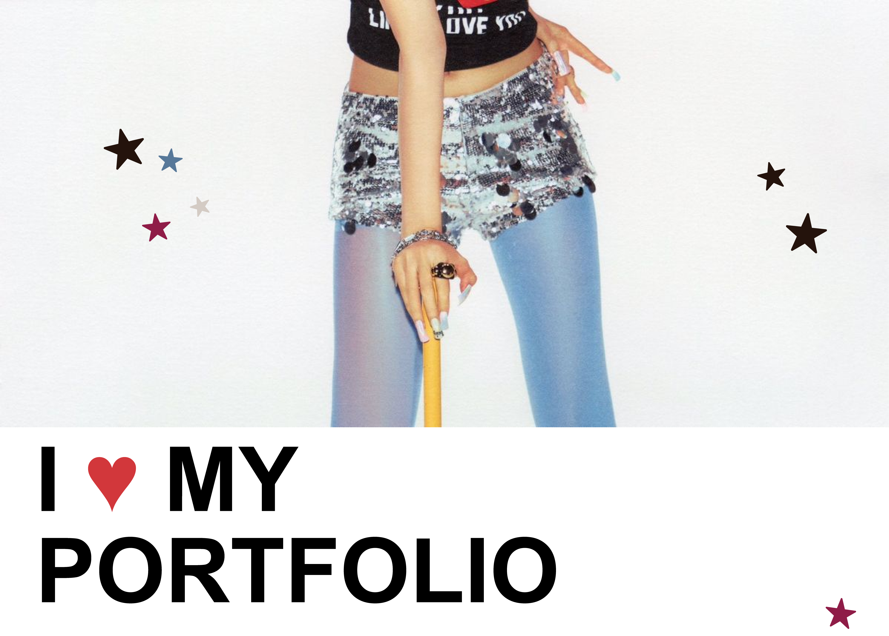
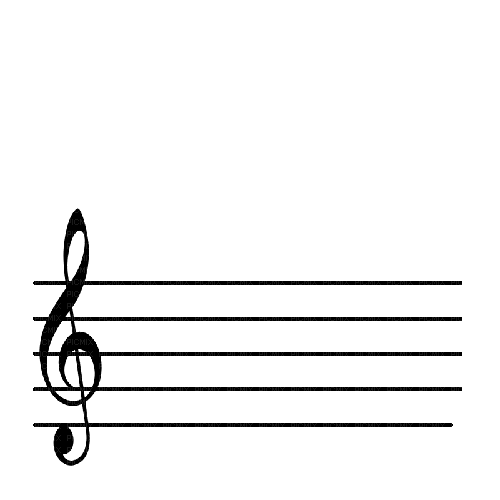

Soy Nicolás Andrey Rivera Buitrago, diseñador gráfico de 20 años, apasionado por la creación de soluciones visuales que combinan estética y funcionalidad. Me motiva transformar ideas en piezas gráficas que comuniquen de manera clara, atractiva y efectiva.
Me caracterizo por mi interés constante en aprender, explorar nuevas tendencias y perfeccionar mis habilidades, lo que me permite aportar propuestas frescas y bien pensadas en cada proyecto. Disfruto asumir nuevos retos y trabajar con dedicación para lograr resultados de alta calidad.
Busco no solo diseñar, sino también generar experiencias visuales que conecten con las personas y aporten valor a cada marca o proyecto.
Número: 3212566916
Correo: Nicolasriverab52@gmail.com
Instagram: @Myouiboyyy
